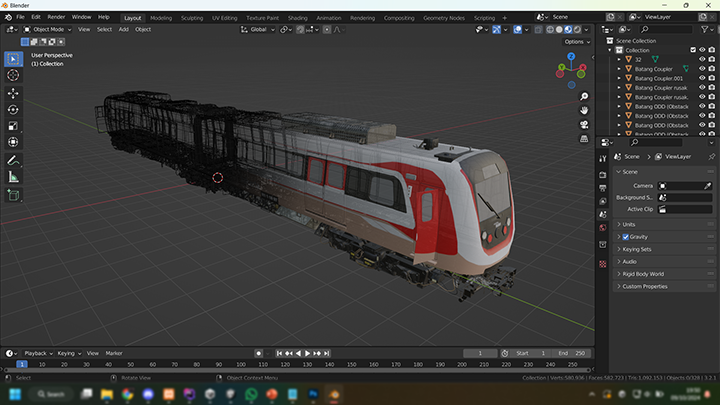
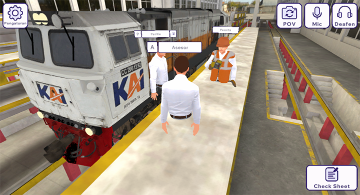

Unity Developer | Multiplayer | AR & VR
DJKA Metaverse is an innovative game designed to simulate the inspection and maintenance of railway locomotives. Developed by DITJEN PERKERETAAPIAN in collaboration with Shinta VR, this project aims to provide a realistic training environment for railway personnel. I have the privilege of contributing to this project as the lead programmer, where I am responsible for creating the core gameplay elements, including the multiplayer system, VR interaction, and multiplatform functionality. In my role, I also guide my team in implementing various systems within the game.
The game features three distinct roles: the Committee, Assessor, and Participant. The Committee and Assessor can be played on desktop platforms, while the Participants engage in the VR experience. The Committee's primary responsibility is to host rooms for the Assessors and Participants, ensuring a smooth flow of the simulation. The Assessors can create maintenance or inspection simulations and evaluate the Participants’ performance. Participants are able to interact with each simulated object, with changes made to these objects synchronizing in real-time with both the Assessor and Committee.
In my role as lead programmer, I faced several key challenges while developing DJKA Metaverse:
One of the significant challenges was addressing the high memory usage, which resulted in low frame rates, especially on the VR platform. To tackle this issue, I implemented several optimization techniques such as texture crunching and creating Level of Detail (LOD) models. I customized existing 3D assets in Blender to create efficient LOD versions, which significantly improved performance and frame rates during gameplay.
Synchronization issues commonly arise in multiplayer environments, affecting the gameplay experience. I focused on developing robust networking solutions to ensure that all players remained in sync during simulations. While these challenges were complex, we were able to implement effective solutions that maintained the integrity of the multiplayer experience.
Bugs frequently occurred in the VR interactions, particularly regarding synchronization with other platforms. Additionally, some interactions did not meet our expectations in terms of responsiveness. To address these challenges, I worked on refining the interaction mechanics and testing extensively to ensure a smooth and immersive experience for users.
Ensuring a seamless experience across different devices presented its own set of challenges. For VR users, symptoms such as dizziness or nausea were common due to the immersive nature of the device. To mitigate these issues, I implemented a locomotion system that allows users to choose between walking and teleportation. Additionally, I introduced a vignette feature for the walking option to reduce motion sickness and improve comfort during gameplay.